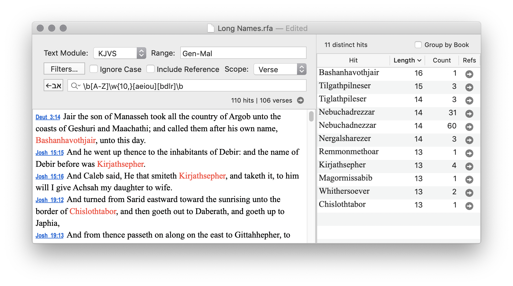

Accordance is a Bible study program for macOS produced by OakTree Software. It is host to many different Bible translations and original language manuscripts. RegexForAccordance allows you to search any of the text modules in Accordance using regular expressions. It uses the AppleScript interface of Accordance to get the lines of text, and then it searches those lines with the regular expression.
Visit the Releases page to download the latest version.
See the included Help file for features and technical details.
Have a look at the Accordance forum for some examples of what you can do.
RegexForAccordance uses ICU Regular Expression syntax. If you are not familiar with regular expressions at all, just search the web for "regular expression tutorial". You will find plenty of guides to get you started.
Let's use regular expressions to find these four occurrences. After that, we will search the entire Hebrew text to see if we can find similar cases in other books.
Open RegexForAccordance and use these settings.
Here is the regular expression.
\b(י\w*)\W+(ה\w*)\W+(ו\w*)\W+(ה\w*)
I have added parentheses around each of the four word-matching parts to make it easier to understand.
The \b at the beginning matches a word boundary, to anchor the first match to the beginning of a word.
The \W+ between the parentheses matches non-word characters, such as whitespace and punctuation.
The \w* part after each letter matches word characters, i.e., not spaces or punctuation.
The result is Esther 5:4, which contains יבוא המלך והמן היום.
Notice that it matched in right-to-left order, the forward direction for Hebrew, even though we wrote the regular expression left-to-right.
This regular expression is the same as the previous one, but we reverse the Hebrew letters.
\b(ה\w*)\W+(ו\w*)\W+(ה\w*)\W+(י\w*)
The result is Esther 1:20, which contains היא וכל־הנשים יתנו.
Now, we want to match words which end with the four letters.
We just move the \w* part to the other side of the Hebrew letters.
We also put \b at the end of the expression
so that it only matches the last letter at the end of the last word.
\b(\w*י)\W+(\w*ה)\W+(\w*ו)\W+(\w*ה)\b
The result is Esther 7:7, which contains כי־כלתה אליו הרעה.
The final regex is the same as the previous, but with the Hebrew letters reversed.
\b(\w*ה)\W+(\w*ו)\W+(\w*ה)\W+(\w*י)\b
The result is Esther 5:13, which contains זה איננו שוה לי.
Expanding the range to search the full Hebrew text, Gen-2Chr (Hebrew book order), we find quite a few more examples of all four cases.
Note that you will get different results, depending on whether you include or omit the bracketed text. I included both results here and show the differences in bold. To omit bracketed text in RegexForAccordance, click Filters…. Under "Remove…" select Bracketed Text.
Note that Num 1:51 contains two separate results, so it counts twice.
| Position, Direction | Bracketed Text | Result Count | Result List (differences in bold) |
|---|---|---|---|
| First, Forward | Include | 24 | Gen 19:25; Exod 4:14; Num 13:32; Deut 11:2; 2 Sam 18:4; 1 Kgs 7:12; 8:42; 18:37; 2 Kgs 10:1; Isa 45:18; Ezek 46:1; Ps 96:11; Esth 5:4; 1 Chr 5:12; 8:39; 16:31; 18:8; 22:18; 23:11,19; 26:4; 2 Chr 20:34; 26:11; 27:3 |
| Omit | same | same | |
| First, Reverse | Include | 33 | Gen 11:9; Exod 4:16; Lev 8:15; 9:9; 21:22; Num 1:51; 5:18; 19:12; Deut 10:7; 20:8; Josh 2:15; 11:16; 18:28; 24:18; 2 Sam 18:4; 1 Kgs 18:3; 2 Kgs 7:2; Isa 30:26; 35:2; 45:20; Jer 31:7; 33:20; Ezek 46:1; Zech 1:5; 8:19; Ps 18:8; 96:11; Ruth 1:21; Eccl 3:17; Esth 1:20; Dan 12:1; 1 Chr 27:30; 2 Chr 23:6; |
| Omit | 34 | Gen 11:9; Exod 4:16; Lev 8:15; 9:9; 21:22; Num 1:51; 5:18; 19:12; Deut 10:7; 20:8; Josh 2:15; 11:16; 18:28; 24:18; 2 Sam 18:4; 1 Kgs 18:3; 2 Kgs 7:2; Isa 30:26; 35:2; 45:20; Jer 31:7; 33:20; Ezek 46:1; Zech 1:5; 8:19; Ps 18:8; 96:11; Ruth 1:21; Eccl 3:17; 10:20; Esth 1:20; Dan 12:1; 1 Chr 27:30; 2 Chr 23:6 | |
| Last, Forward | Include | 40 | Gen 12:15; 19:13; 38:7; 43:10; Exod 3:13; 16:22; Num 5:12; Deut 24:5; 30:12; 31:29; Josh 10:18; Judg 16:16; 19:24; 20:18,41; 2 Sam 18:3; 1 Kgs 13:26; 16:7; Isa 16:3; 33:22; Jer 9:11,17; 15:19; 49:19; 51:31; Ezek 23:8; 30:2; 31:15; Hos 11:10; Joel 2:7,17; Zech 9:17; Ps 57:7; 73:15; 107:24; 115:11; Song 2:11; Esth 7:7; 1 Chr 7:34; 23:17 |
| Omit | 38 | Gen 12:15; 19:13; 38:7; 43:10; Exod 3:13; 16:22; Num 5:12; Deut 24:5; 30:12; 31:29; Josh 10:18; Judg 16:16; 19:24; 20:18, 41; 2 Sam 18:3; 1 Kgs 13:26; 16:7; Isa 33:22; Jer 9:11, 17; 15:19; 49:19; 50:29; 51:31; Ezek 23:8; 30:2; 31:15; Hos 11:10; Joel 2:7, 17; Zech 9:17; Ps 57:7; 73:15; 107:24; 115:11; Esth 7:7; 1 Chr 23:17 | |
| Last, Reverse | Include | 26 | Gen 24:58; 49:11,31; Exod 4:3; 16:7; 25:23; 37:10; Lev 8:29; Num 13:30; 24:13; Josh 19:47; 24:27; Judg 14:2; 1 Sam 20:21; 2 Sam 15:14; Isa 16:3; Jer 48:2; 49:19; 50:15,29; Ezek 1:27; Ps 106:1; Lam 3:33; Esth 5:13; Ezra 8:19; 1 Chr 21:17 |
| Omit | 28 | Gen 24:58; 49:31; Exod 4:3; 16:7; 25:23; 37:10; Lev 8:29; Num 13:30; 24:13; Josh 19:47; 24:27; Judg 14:2; 1 Sam 20:2, 21; 2 Sam 15:14; Isa 16:3; Jer 2:15; 48:2; 49:19; 50:15, 29; Ezek 1:27; Ps 106:1; Lam 3:33; Esth 5:13; Ezra 8:19; 1 Chr 6:11; 21:17 |
If the search scope is set to Book instead of Verses, then even more results are found, because the matches can span verse boundaries.
In RegexForAccordance, use the statistics pane to get frequency counts of the matches. Click the Count column header to sort by that value. If the Count column isn't visible, right click and choose it.
To export the statistics, select all of the rows in the table. Then copy and paste into Excel or Numbers, for example.
Hebrew Letter Frequency
|
| Hit | Count |
|---|---|
| י | 138794 |
| ו | 130517 |
| ה | 102346 |
| א | 96045 |
| ל | 88638 |
| ר | 68366 |
| ב | 65525 |
| ת | 63583 |
| ש | 58452 |
| מ | 57894 |
| ע | 45032 |
| ם | 41446 |
| נ | 40101 |
| כ | 33603 |
| ד | 32544 |
| ח | 27743 |
| פ | 16983 |
| ק | 16339 |
| ן | 15310 |
| ך | 14068 |
| צ | 11775 |
| ג | 10139 |
| ס | 9672 |
| ז | 9135 |
| ט | 6352 |
| ץ | 3290 |
| ף | 2561 |
Search: \b\w
| Hit | Count |
|---|---|
| ו | 51303 |
| א | 44413 |
| ה | 30910 |
| ל | 25022 |
| ב | 24852 |
| י | 24236 |
| מ | 20236 |
| ע | 16489 |
| כ | 14345 |
| ש | 11071 |
| נ | 6978 |
| ת | 6976 |
| ח | 5466 |
| פ | 4630 |
| ר | 4285 |
| ד | 4274 |
| ס | 3418 |
| ק | 3012 |
| ג | 2958 |
| צ | 2554 |
| ז | 2169 |
| ט | 900 |
| ן | 9 |
Search: \w\b
| Hit | Count |
|---|---|
| ה | 41446 |
| ם | 41446 |
| י | 32990 |
| ו | 30246 |
| ת | 29098 |
| ל | 24905 |
| ר | 23360 |
| ן | 15310 |
| א | 14137 |
| ך | 14068 |
| ד | 8602 |
| ב | 6984 |
| ש | 6176 |
| ח | 3952 |
| ע | 3851 |
| ץ | 3290 |
| ס | 2699 |
| ף | 2561 |
| ק | 1908 |
| ט | 1235 |
| פ | 1181 |
| ז | 587 |
| ג | 430 |
| מ | 25 |
| כ | 19 |
(The charts were made in Numbers.)
From these results, we find that ה, ו, and י are all very common at the beginning and ending of words. It is easy to see how acrostics of יהוה could occur randomly, and also how they could be constucted deliberately, since there are so many words which begin or end with those letters.
How many different words are in the Hebrew Old Testament?
Search: \w+
Result: 39,928 distinct hits in HMT-W4.
We are defining a "word" as just a sequence of Hebrew characters. Of course, many of these words are just different forms of the same root word, with different prefixes and suffixes.
How many different words begin or end with ה, ו, and י?
This table shows the total number of words and the number of distinct words for each case.
regextotal distinct | Begin | End |
|---|---|---|
| ה | \bה\w+30,811 4,095 | \w+ה\b41,347 5,370 |
| ו | \bו\w+51,023 11,154 | \w+ו\b29,966 6,141 |
| י | \bי\w+24,232 2,596 | \w+י\b32,986 4,265 |
How many words are in the book of Matthew in the Greek New Testament?
Search: \w+
This matches strings of one or more "word" characters (not whitespace or punctuation).
The result shows 18,350 hits, which is the total word count. It also shows that 3,970 different word were found, and it lists each word with count and length.
A palindrome is a word or phrase that reads the same in both directions. If there are an odd number of letters, the pattern will be like this: ABCDCBA. If there are an even number of letters, then the central D part is omitted: ABCCBA.
Find whole words which are palindromes.
There isn't a general solution, but the brute force approach works.
Look for words, \b...\b, which have
1, 2, or 3 pairs of letters,
(\w)...\1,
and with an optional central letter, \w?.
This can be extended to match more pairs of letters, but the longest match in the Hebrew text is 7 letters.
This makes use of the capturing group feature of regular expressions.
The \1, \2, and \3, refer back to the thing that was matched within the
sets of parentheses.
The (?:...) part is for non-capturing parentheses.
It groups the three "or" options
between the \b word boundaries without creating a capture group.
Search: \b(?:(\w)\w?\1|(\w)(\w)\w?\3\2|(\w)(\w)(\w)\w?\6\5\4)\b
The longest word is לאיתיאל, which occurs twice in Prov 30:1.
This is the same as the previous search, but allows spaces and punctuation between the letters: "Madam, I'm Adam" (Genesis something, probably).
The longest phrase that I can find in Hebrew is Prov 30:1 again, which just repeats the 7 letter palindromic word.
Search: (?:(\w)\W*(\w)\W*(\w)\W*(\w)\W*(\w)\W*(\w)\W*(\w)\W*\w?\W*\7\W*\6\W*\5\W*\4\W*\3\W*\2\W*\1)
More results are found by matching shorter phrases.
Search \b(?:(\w)\W*(\w)\W*(\w)\W*(\w)\W*\w?\W*\4\W*\3\W*\2\W*\1)\b
Result:
Search \b(?:(\w)\W*(\w)\W*(\w)\W*\w?\W*\3\W*\2\W*\1)\b
Result: 30 hits
Gen 11:16; 50:17; Deut 4:42; 19:6; Josh 8:20; 20:5; 1 Sam 9:26; 16:10; 17:33; 22:5; 2 Sam 3:1;
13:26; 16:9; 19:26,30; 24:3; 1 Kgs 7:23; 13:32; 20:40; 2 Kgs 2:8,14; Isa 55:13; 59:11; Ezek 1:3;
Zeph 3:2; Zech 1:16; Ps 68:26; Prov 30:1; Ruth 4:22
Search for repeated words or phrases.
It consists of any sequence of characters, (.+),
followed by non-word characters (white space or punctuation), \W+,
followed by the same sequence of characters, \1.
It must also be surrounded by word boundaries \b...\b.
Search: \b(.+)\W+\1\b
Text: GNT-T
Filter: Remove Greek punctuation and diacritics
Options: Ignore case
The longest match is John 10:11: ο ποιμην ο καλος ο ποιμην ο καλος.
The most frequent match is αμην αμην, found 25 times.
Text: HMT-W4
Filter: Remove Hebrew cantillation, points, and punctuation
Longest match: Exod 25:35 and Exod 37:21: וכפתר תחת שני הקנים ממנה וכפתר תחת שני הקנים ממנה
Most frequent: סביב סביב, found 27 times.
Longest: 1 Sam 23:26: και οι ανδρες αυτου εκ μερους του ορους τουτου και ην Δαυιδ και οι ανδρες αυτου εκ μερους του ορους τουτου και ην Δαυιδ (This one doesn't make sense because the phrases are not divided properly.)
Second Longest: 1 Sam 14:4: και ακρωτηριον πετρας ενθεν και ακρωτηριον πετρας ενθεν
Most frequent: κυριε κυριε, 16 times.
Find all words in the Greek New Testament which are capitalized, but are not at the beginning of a sentence. We expect to find proper nouns mostly.
Let's build this regular expression step by step. Open a new window of RegexForAccordance.
First, just search for capital letters.
[Α-Ω]
Next, we want only capital letters which are at the beginning of a word.
Add \b at the front.
\b[Α-Ω]
That gives us all the first letters, but we want to match whole words.
Add \w+ to the end. This matches matches one or more "word" characters,
which includes letters but not whitespace or punctuation.
\b[Α-Ω]\w+
Now it matches all capitalized words, but we want to exclude the words which are at the beginning of a sentence. Let's figure out how to find the beginning of a sentence first.
Search for \. \w. That will match a period, followed by a space, followed by one
word character.
What about questions? The Greek question mark is a semicolon, so we will include that also.
[.;] \w
The most common place for a sentence to begin is at the beginning of a verse, which we can match with the beginning-of-line anchor.
^
Now, put all of those together into one "or" statement.
(^|[.;] )\w
Spot check: notice that Matt 1:6 has two sentences, and this matches the beginning of both.
Finally, we want to exclude the words which are at the beginning of a sentence. We need to turn our beginning-of-sentence matcher into a "negative look-behind assertion". It is "negative" because we are specifying what we want to exclude. It is "look-behind" because we want to look at what precedes the capitalized word.
According to the documentation, a negative look-behind assertion has this form.
(?<! ... )
So, this is what we need.
(?<!(^|[.;] ))\b[Α-Ω]\w+
That gives us what we want.
.
{kind=link}